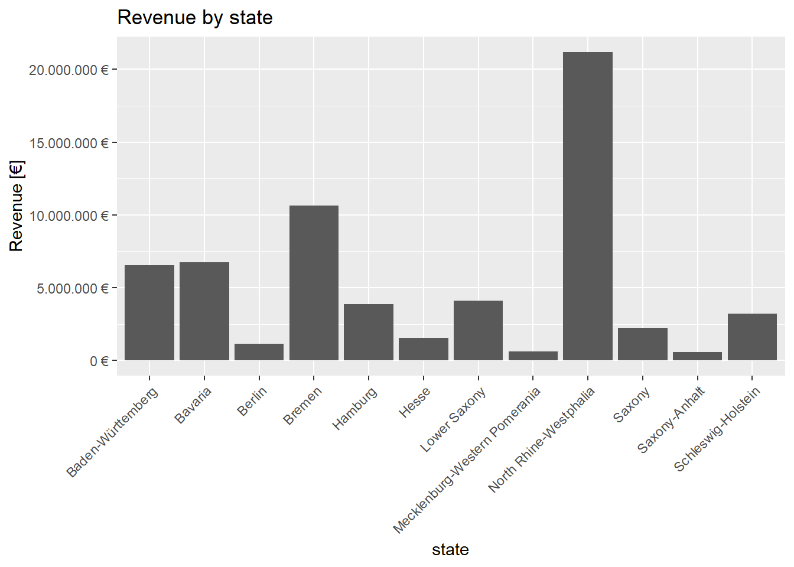

Welcome to my page: Let’s have some fun with programming in R.
Task 1: Analyze the sales by location (state) with a bar plot.
# 1.0 Load libraries
library("tidyverse")
library("readxl")
#library("ggplot2")
# 2.0 Importing Files
DATA_PATH = "C:/Users/corne/OneDrive/Dokumente/Uni/Master/WS2021/BuisnessDataScience/DS_101/00_data/01_bike_sales/01_raw_data/"
raw_data_bikes = read_excel(paste0(DATA_PATH,"bikes.xlsx"))
raw_data_shops = read_excel(paste0(DATA_PATH,"bikeshops.xlsx"))
raw_data_orderlines = read_excel(paste0(DATA_PATH,"orderlines.xlsx"))
# 3.0 Examining Data
raw_data_bikes %>% head(n = 5)## # A tibble: 5 x 9
## bike.id model model.year frame.material weight price category gender url
## <dbl> <chr> <dbl> <chr> <dbl> <dbl> <chr> <chr> <chr>
## 1 2875 Aeroa~ 2020 carbon 7.6 4579 Road - R~ unisex https:~
## 2 2873 Aeroa~ 2020 carbon 7.27 6919 Road - R~ unisex https:~
## 3 2874 Aeroa~ 2020 carbon 7.1 6429 Road - R~ unisex https:~
## 4 2876 Aeroa~ 2020 carbon 7.73 5069 Road - R~ unisex https:~
## 5 2877 Aeroa~ 2020 carbon 7.83 3609 Road - R~ unisex https:~raw_data_shops## # A tibble: 30 x 5
## bikeshop.id name location lat lng
## <dbl> <chr> <chr> <dbl> <dbl>
## 1 1 Zum Goldenen Lenker Berlin, Berlin 52.5 13.4
## 2 2 AlexandeRad Hamburg, Hamburg 53.6 10.0
## 3 3 Fahrradladen 16 Munich, Bavaria 48.2 11.6
## 4 4 Bikestation Köln Cologne, North Rhine-Westphalia 50.9 6.95
## 5 5 Montimare Frankfurt, Hesse 50.1 8.68
## 6 6 fahrschneller Stuttgart, Baden-Württemberg 48.8 9.18
## 7 7 Rad Ab Düsseldorf, North Rhine-Westph~ 51.2 6.79
## 8 8 Lucky Bike Dortmund, North Rhine-Westphal~ 51.5 7.47
## 9 9 Zweirad-Center Stadl~ Essen, North Rhine-Westphalia 51.5 7.01
## 10 10 WITT-RAD Bremen, Bremen 53.1 8.83
## # ... with 20 more rowsglimpse(raw_data_orderlines)## Rows: 15,644
## Columns: 7
## $ ...1 <chr> "1", "2", "3", "4", "5", "6", "7", "8", "9", "10", "11"...
## $ order.id <dbl> 1, 1, 2, 2, 3, 3, 3, 3, 3, 4, 5, 5, 5, 5, 6, 6, 6, 6, 7...
## $ order.line <dbl> 1, 2, 1, 2, 1, 2, 3, 4, 5, 1, 1, 2, 3, 4, 1, 2, 3, 4, 1...
## $ order.date <dttm> 2015-01-07, 2015-01-07, 2015-01-10, 2015-01-10, 2015-0...
## $ customer.id <dbl> 2, 2, 10, 10, 6, 6, 6, 6, 6, 22, 8, 8, 8, 8, 16, 16, 16...
## $ product.id <dbl> 2681, 2411, 2629, 2137, 2367, 1973, 2422, 2655, 2247, 2...
## $ quantity <dbl> 1, 1, 1, 1, 1, 1, 1, 1, 1, 1, 1, 2, 1, 1, 1, 1, 1, 1, 1...# 4.0 Joining Data
data_all = left_join(raw_data_orderlines, raw_data_bikes, by = c("product.id" = "bike.id"))
data_all = left_join(data_all, raw_data_shops, by = c("customer.id" = "bikeshop.id"))
# 5.0 Wrangling Data
data_wrangled = separate(data_all, col = location, into = c("city","state"), sep=",")
data_wrangled = data_wrangled %>% mutate(total.price = price*quantity) # new column with mutate
sales_by_states = data_wrangled %>% select(state, total.price) %>% group_by(state) %>% summarize(sales = sum(total.price)) # create a new dataframe with columns we need
# visualize the data
p1 <- ggplot(sales_by_states,aes(state, sales)) + theme(axis.text.x = element_text(angle = 45, hjust = 1)) +
geom_bar(stat = "identity") + scale_y_continuous(labels = scales::dollar_format(big.mark = ".",
decimal.mark = ",",
prefix = "",
suffix = " €")) +
labs(
title = "Revenue by state",
x = "state", # Override defaults for x and y
y = "Revenue [€]"
)
plot(p1)
Task 2: Analyze the sales by location and year (facet_wrap). Because there are 12 states with bike stores, you should get 12 plots.
# Wrangling Data
sales_by_year_tbl <- data_wrangled %>% separate(order.date,into=c('year','month','day'),sep='-') %>% select(year, state, total.price) %>% group_by(year, state) %>% summarise(sales = sum(total.price)) %>% ungroup()
p2 <- sales_by_year_tbl %>% ggplot(aes(x = year, y = sales)) +
# Visualize the data
geom_col() +
# Facet
facet_wrap(~ state) + scale_y_continuous(labels = scales::dollar_format(big.mark = ".",
decimal.mark = ",",
prefix = "",
suffix = " €")) +
labs(
title = "Revenue by year and state",
x = "year", # Override defaults for x and y
y = "Revenue [€]"
)
plot(p2)Task1: Get some data via an API.
library("httr")
library("jsonlite")
library("tidyverse")
# function, which read from the webpage and convert the raw Unicode
read <- function(url = "https://swapi.dev/api/"){
resp <- GET(url)
#resp_as_list <- content(resp)
resp_as_list <- resp %>% .$content %>% rawToChar() %>% fromJSON()
return(resp_as_list)
}
res_as_list = read()
names_of_list = names(res_as_list)
df_list = list()
# loop through all tables (people, planet, etc.)
for (names in 1:length(names_of_list)){
urls = res_as_list[names_of_list[names]]
content = read(urls[[1]])
# count amount of observations
counts = content$count
# loop through all observations
observation = list()
for (nr in 1:counts){
#print(nr)
observation[[nr]] <- pivot_wider(enframe(read(paste0(urls[[1]],nr,"/"))))
}
# convert to dataframe
df <- bind_rows(observation)
df_list[[names]] = df
}
df5 = df_list[[5]]
glimpse(df5)## Rows: 39
## Columns: 17
## $ detail <list> ["Not found", "Not found", "Not found", NUL...
## $ name <list> [NULL, NULL, NULL, "Sand Crawler", NULL, "T...
## $ model <list> [NULL, NULL, NULL, "Digger Crawler", NULL, ...
## $ manufacturer <list> [NULL, NULL, NULL, "Corellia Mining Corpora...
## $ cost_in_credits <list> [NULL, NULL, NULL, "150000", NULL, "14500",...
## $ length <list> [NULL, NULL, NULL, "36.8 ", NULL, "10.4 ", ...
## $ max_atmosphering_speed <list> [NULL, NULL, NULL, "30", NULL, "1200", "250...
## $ crew <list> [NULL, NULL, NULL, "46", NULL, "1", "1", "1...
## $ passengers <list> [NULL, NULL, NULL, "30", NULL, "1", "1", "0...
## $ cargo_capacity <list> [NULL, NULL, NULL, "50000", NULL, "50", "5"...
## $ consumables <list> [NULL, NULL, NULL, "2 months", NULL, "0", "...
## $ vehicle_class <list> [NULL, NULL, NULL, "wheeled", NULL, "repuls...
## $ pilots <list> [NULL, NULL, NULL, [], NULL, [], [], [], NU...
## $ films <list> [NULL, NULL, NULL, <"http://swapi.dev/api/f...
## $ created <list> [NULL, NULL, NULL, "2014-12-10T15:36:25.724...
## $ edited <list> [NULL, NULL, NULL, "2014-12-20T21:30:21.661...
## $ url <list> [NULL, NULL, NULL, "http://swapi.dev/api/ve...Task2: Scrape the websites “https://www.rosebikes.de/” and create a small database.
library("rvest")
library("xopen")
url_home = "https://www.rosebikes.de/fahrräder/mtb"
#xopen(url_home)
html_home <- read_html('https://www.rosebikes.de/fahrräder/mtb')
# <div class="catalog-category-bikes__price">
# <div class="catalog-category-bikes__price-title">
# ab 1.699,00 €
bikes <- html_nodes(html_home, css = "li.catalog-category-bikes__list-item")
names = list()
prices = list()
# loop through all bikes
i=1
for (bike in bikes){
# extract the name
name = html_text(html_node(bike,css="div.catalog-category-bikes__title"))
name = str_remove_all(name, "\n")
# extract the price
price = html_text(html_node(bike, css="div.catalog-category-bikes__price-title"))
price = str_remove_all(price, "\nab")
price = str_remove_all(price, "\n")
price = str_remove_all(price, " ")
price = str_replace_all(price, "[.]","")
#price = str_replace_all(price, ",",".")
price = str_remove_all(price, "€")
# convert price into numerical value
price_split = str_split(price, ",")[[1]]
if (length(price_split) ==2){
first = price_split[1]
last = substring(price_split[2],1,2)
price = paste0(first,'.',last)
price = as.numeric(price)
} else {
next
}
names[[i]] = name
prices[[i]] = price
i = i + 1
}
# create and print data frame
df = unnest(tibble(name = names, price = prices),cols=c(name,price))
print(df)## # A tibble: 7 x 2
## name price
## <chr> <dbl>
## 1 GROUND CONTROL 1699
## 2 ROOT MILLER 1999
## 3 PIKES PEAK 3099
## 4 PSYCHO PATH 1849
## 5 THRILL HILL 2599
## 6 THRILL HILL TRAIL 2899
## 7 SOUL FIRE 2149Patent Dominance: What US company / corporation has the most patents? List the 10 US companies with the most assigned/granted patents.
library("tidyverse")
library("tidyr")
library("vroom")
# ignore columns with col_skip
col_types <- list(
location_id = col_skip(),
name_first = col_skip(),
name_last = col_skip(),
id = col_character(),
type = col_character(),
number = col_character(),
country = col_character(),
date = col_date("%Y-%m-%d"),
abstract = col_character(),
title = col_character(),
kind = col_character(),
num_claims = col_double(),
filename = col_character(),
withdrawn = col_double()
)
# read tables
patent_assignee_tbl <- vroom(file = "C:/Users/corne/OneDrive/Dokumente/Uni/Master/WS2021/BuisnessDataScience/DS_101/00_data/03_patent/patent_assignee.tsv",
delim = "\t",
col_types = col_types,
na = c("", "NA", "NULL")
)
assignee_tbl <- vroom(file = "C:/Users/corne/OneDrive/Dokumente/Uni/Master/WS2021/BuisnessDataScience/DS_101/00_data/03_patent/assignee.tsv",
delim = "\t",
col_types = col_types,
na = c("", "NA", "NULL")
)
# consider only US companies/cooperations
assignee_tbl <- assignee_tbl %>% filter(type == 2)
# join the tables
joined <- left_join(patent_assignee_tbl,assignee_tbl, by =c("assignee_id"="id"))
joined <- drop_na(joined)
# count the number of patents of each organization
joined <- joined %>% group_by(organization) %>% summarize(count=n())
# sort in decreasing order
joined <- joined[order(joined$count, decreasing = TRUE),]
joined <- drop_na(joined)
# list the top 10 companies
companies <- list()
for (i in 1:10){
companies[[i]] <- joined$organization[i]
}
print(companies)## [[1]]
## [1] "International Business Machines Corporation"
##
## [[2]]
## [1] "General Electric Company"
##
## [[3]]
## [1] "Intel Corporation"
##
## [[4]]
## [1] "Hewlett-Packard Development Company, L.P."
##
## [[5]]
## [1] "Microsoft Corporation"
##
## [[6]]
## [1] "Micron Technology, Inc."
##
## [[7]]
## [1] "QUALCOMM Incorporated"
##
## [[8]]
## [1] "Texas Instruments Incorporated"
##
## [[9]]
## [1] "Xerox Corporation"
##
## [[10]]
## [1] "Apple Inc."Recent patent acitivity: What US company had the most patents granted in 2019? List the top 10 companies with the most new granted patents for 2019.
# ignore columns with col_skip
col_types <- list(
number = col_skip(),
country = col_skip(),
abstract = col_skip(),
title = col_skip(),
kind = col_skip(),
num_claims = col_skip(),
filename = col_skip(),
withdrawn = col_skip(),
location_id = col_skip(),
name_first = col_skip(),
name_last = col_skip(),
id = col_character(),
type = col_character(),
number = col_character(),
country = col_character(),
date = col_date("%Y-%m-%d"),
abstract = col_character(),
title = col_character(),
kind = col_character(),
num_claims = col_double(),
filename = col_character(),
withdrawn = col_double()
)
# read tables
patent_assignee_tbl <- vroom(file = "C:/Users/corne/OneDrive/Dokumente/Uni/Master/WS2021/BuisnessDataScience/DS_101/00_data/03_patent/patent_assignee.tsv",
delim = "\t",
col_types = col_types,
na = c("", "NA", "NULL")
)
assignee_tbl <- vroom(file = "C:/Users/corne/OneDrive/Dokumente/Uni/Master/WS2021/BuisnessDataScience/DS_101/00_data/03_patent/assignee.tsv",
delim = "\t",
col_types = col_types,
na = c("", "NA", "NULL")
)
patent_tbl <- vroom(file = "C:/Users/corne/OneDrive/Dokumente/Uni/Master/WS2021/BuisnessDataScience/DS_101/00_data/03_patent/patent.tsv",
delim = "\t",
col_types = col_types,
na = c("", "NA", "NULL")
)
# delete all patents, which are not assigned in 2019
patent_tbl <- patent_tbl %>% filter(date >= "2019-01-01" & date < "2020-01-01")
# keep only the columns "id" and "date" (we don't need colum type here)
patent_tbl <- patent_tbl[c("id","date")]
# consider only US companies/cooperations
assignee_tbl <- assignee_tbl %>% filter(type == 2)
# join the three tables
joined <- left_join(patent_assignee_tbl, patent_tbl, by = c("patent_id"="id"))
joined <- drop_na(joined)
joined <- left_join(joined, assignee_tbl, by = c("assignee_id" = "id"))
# count the number of patents from each organization
joined <- joined %>% group_by(organization) %>% summarize(count=n())
# sort in decreasing order
joined <- joined[order(joined$count, decreasing = TRUE),]
joined <- drop_na(joined)
# write the top ten companies in a list
res_list <- list()
for (i in 1:10){
res_list[[i]] <- joined[order(joined$count, decreasing = TRUE),]$organization[i]
}
print(res_list)## [[1]]
## [1] "International Business Machines Corporation"
##
## [[2]]
## [1] "Intel Corporation"
##
## [[3]]
## [1] "Microsoft Technology Licensing, LLC"
##
## [[4]]
## [1] "Apple Inc."
##
## [[5]]
## [1] "Ford Global Technologies, LLC"
##
## [[6]]
## [1] "Amazon Technologies, Inc."
##
## [[7]]
## [1] "QUALCOMM Incorporated"
##
## [[8]]
## [1] "Google Inc."
##
## [[9]]
## [1] "General Electric Company"
##
## [[10]]
## [1] "Hewlett-Packard Development Company, L.P."Innovation in Tech: What is the most innovative tech sector? For the top 10 companies (worldwide) with the most patents, what are the top 5 USPTO tech main classes?
# ignore columns with col_skip
col_types <- list(
uuid = col_skip(),
subclass_id = col_skip(),
sequence = col_skip(),
number = col_skip(),
country = col_skip(),
abstract = col_skip(),
title = col_skip(),
kind = col_skip(),
num_claims = col_skip(),
filename = col_skip(),
withdrawn = col_skip(),
location_id = col_skip(),
name_first = col_skip(),
name_last = col_skip(),
id = col_character(),
type = col_character(),
number = col_character(),
country = col_character(),
date = col_date("%Y-%m-%d"),
abstract = col_character(),
title = col_character(),
kind = col_character(),
num_claims = col_double(),
filename = col_character(),
withdrawn = col_double()
)
# read tables
patent_assignee_tbl <- vroom(file = "C:/Users/corne/OneDrive/Dokumente/Uni/Master/WS2021/BuisnessDataScience/DS_101/00_data/03_patent/patent_assignee.tsv",
delim = "\t",
col_types = col_types,
na = c("", "NA", "NULL")
)
assignee_tbl <- vroom(file = "C:/Users/corne/OneDrive/Dokumente/Uni/Master/WS2021/BuisnessDataScience/DS_101/00_data/03_patent/assignee.tsv",
delim = "\t",
col_types = col_types,
na = c("", "NA", "NULL")
)
uspc_tbl <- vroom(file = "C:/Users/corne/OneDrive/Dokumente/Uni/Master/WS2021/BuisnessDataScience/DS_101/00_data/03_patent/uspc.tsv",
delim = "\t",
col_types = col_types,
na = c("", "NA", "NULL")
)
# list the top 10 wordwide companies!
assignee_tbl <- assignee_tbl %>% filter(type == 2 | type == 3 ) # consider US or foreign companies
assignee_tbl <- drop_na(assignee_tbl)
joined <- left_join(patent_assignee_tbl, assignee_tbl, by =c("assignee_id"="id")) %>% drop_na()
comp_tbl <- joined %>% group_by(organization) %>% summarize(count=n())
comp_tbl <- comp_tbl[order(comp_tbl$count, decreasing = TRUE),]
top_ten_comp <- list()
for (i in 1:10) {
top_ten_comp[[i]] = comp_tbl$organization[i]
}
# delete all entries where the company is not in the top 10 company list
joined <- joined[joined$organization %in% top_ten_comp,]
# join with uspc table via patent_id
test <- left_join(joined, uspc_tbl, by = c("patent_id"="patent_id"))
test <- test[!duplicated(test$patent_id), ]
test <-drop_na(test)
# group by main class and count
test <- test %>% group_by(mainclass_id) %>% summarise(count=n())
# order indecreasing order
test <- test[order(test$count,decreasing = TRUE),]
# determine the top 5main classe
main_class_list = list()
for (i in 1:5){
main_class_list[[i]] = test$mainclass_id[i]
}
print(main_class_list)## [[1]]
## [1] "257"
##
## [[2]]
## [1] "365"
##
## [[3]]
## [1] "438"
##
## [[4]]
## [1] "370"
##
## [[5]]
## [1] "358"Goal: Map the time course of the cumulative Covid-19 cases!
library(tidyverse)
covid_tbl <- read_csv("https://opendata.ecdc.europa.eu/covid19/casedistribution/csv")
# sort the data accoridng the date
covid_tbl <- arrange(covid_tbl, countriesAndTerritories, year, month,day)
# convert date as "Date" datatype
covid_tbl[,'dateRep'] <- as.Date(covid_tbl$dateRep, "%d/%m/%Y")
#calculate cumulated cases and deaths
covid_tbl <- mutate(group_by(covid_tbl, countriesAndTerritories), cum_death=cumsum(deaths))
covid_tbl <- mutate(group_by(covid_tbl, countriesAndTerritories), cum_cases=cumsum(cases))
#calculate death rate by cumulated deaths/population
covid_tbl <- mutate(covid_tbl, mortality_rate = cum_death/(popData2019+1e-8))
# function that filters for data of only one state
get_cases_from_state <- function(state){
cases=covid_tbl[covid_tbl$countriesAndTerritories == state,]
return(cases)
}
#get cases of different states
cases_germany = get_cases_from_state('Germany')
cases_usa = get_cases_from_state('United_States_of_America')
cases_uk = get_cases_from_state('United_Kingdom')
cases_spain = get_cases_from_state('Spain')
cases_france = get_cases_from_state('France')
# plot cumulative cases for some states
p=ggplot()+
geom_line(data = cases_germany, aes(y = cum_cases, x = dateRep, color='Germany')) +
geom_line(data = cases_usa, aes(y = cum_cases, x = dateRep, color = 'United_States_of_America')) +
geom_line(data = cases_uk, aes(y = cum_cases, x = dateRep,color = 'United_Kingdom')) +
geom_line(data = cases_spain, aes(y = cum_cases, x = dateRep, color = 'Spain')) +
geom_line(data = cases_france, aes(y = cum_cases,x = dateRep, color = 'France')) +
labs(title = 'Cumulative Cases', x = 'date', y = 'cases', color = 'Legend')
plot(p)Goal: Visualize the distribution of the mortality rate (deaths / population)
# get most actual mortality rates
last_date <- max(covid_tbl$dateRep)
covid_last <- covid_tbl[covid_tbl$dateRep == last_date,]
# adjust the data
covid_last$countriesAndTerritories <- lapply(covid_last$countriesAndTerritories, gsub, pattern = "_", replacement = " ")
covid_last$countriesAndTerritories <- lapply(covid_last$countriesAndTerritories, gsub, pattern = "United Kingdom", replacement = "UK")
covid_last$countriesAndTerritories <- lapply(covid_last$countriesAndTerritories, gsub, pattern = "United States of America", replacement = "USA")
covid_last$countriesAndTerritories <- lapply(covid_last$countriesAndTerritories, gsub, pattern = "Czechia", replacement = "Czech Republic")
covid_last=unnest(covid_last,cols=c(countriesAndTerritories))
# load data
world <- map_data("world")
# join the lat/long data and the covid data
joined <- right_join(world, covid_last, by = c('region'='countriesAndTerritories'))
# drop states where no data is available (e.g vatican)
joined <- joined[!is.na(joined$mortality_rate),]
# visualize mortality rates
p = ggplot() +
geom_map(
data = joined, map = world, aes(long, lat, map_id = region,fill = mortality_rate), color = "black", size = 0.1)+
labs(title = 'Mortality Rate',color='Legend')+
scale_fill_gradient(low = "red", high = "black",labels=scales::percent)
plot(p)